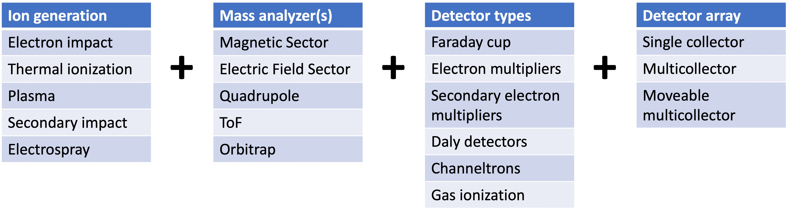
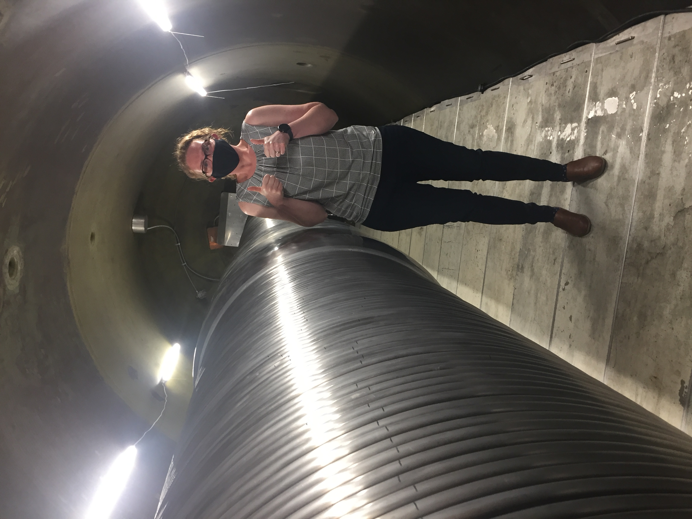

6 Types of mass spectrometer
6.1 Overview
A variety of different types of mass spectrometers exist. In detail, the type of mass spectrometer is defined by the combination of an ion source, one more type of mass analyzer, and one or more type of detector.

Different combinations of these three components will give you a different type of mass spectrometer. Since each type of mass spectrometer typically only has one type of ion source, we have organized this section at a high level by ion source, and then by type of mass analyzer or analyzers. We do not delve into detector arrays at this stage; while in practice the detector configuration matters for specific mass spectrometer applications, in terms of defining mass spectrometer ‘types’ this is the least important characteristic.
6.2 Thermal Ionization (TIMS)
Thermal ionization sources are basically only used in one type of mass spectrometer: a Thermal Ionization Mass Spectrometer, or TIMS. It’s pretty straightforward: the ions are generated by thermal ionization, and then the ions are accelerated through a magnetic sector to achieve momentum to charge separation. Boom! It’s that easy. The beautiful simplicity of the TIMS is why this was the first mass spectrometer to come into existence. In the geosciences, TIMS is most commonly used for high-precision and high-temperature geochronology (e.g., zircon U-Pb geochronology) and geochemistry (e.g., W isotopes). Before the advent of ICP-MS technology, TIMS was also commonly used for trace element analyses.
6.3 Electron Impact Source
Mass spectrometers with electron impact sources are used to analyze materials or samples that, upon being let into the mass spectrometer, are already in a gaseous state. The type of mass spectrometer that has an electron impact source is then defined by the type (or types) of mass analyzer the gaseous ions encounter after being accelerated away from the ion source.
6.3.1 Sector Field Mass Spectrometers
Static Volume Mass Spectrometers, Including Noble Gas Mass Spectrometers (NGMS)
Static volume mass spectrometers consist of an electron impact source and a magnetic sector mass analyzer. Importantly, with these mass spectrometers measurements are made ‘statically’, i.e., the volume of the mass spectrometer is not being pumped on by vacuum pumps during the analysis. Static volume mass spectrometers are very commonly utilized to analyze noble gas isotopes and other gases (e.g., N isotopes) extracted from solid materials where there is a finite, comparably small amount of gas that would be consumed too quickly if the mass spectrometer volume was being pumped on during the analysis. This type of instrument is commonly used for geochronology using noble gas systems (e.g., \(^{40}\)Ar\(^{39}\)Ar).
Isotope Ratio Mass Spectrometers (IRMS)
6.3.2 Quadrupoles
Residual Gas Analyzers (RGAs)
Residual gas analyzers, or RGAs, are actually used in a variety of mass spectrometry laboratories for leak checking/testing: if atmosphere is somehow getting into your instrument via a leak somewhere in the vacuum system, RGAs can be used to detect it. However, RGAs can also be used for geochemical analyses involving gases when high sensitivity, precision, and mass resolution are not required. For example, this type of instrument is commonly used by the (U-Th)/He community to measure radiogenic \(^{4}\)He analyses by isotope dilution.
Gas Chromatograph Mass Spectrometer
6.3.3 Electric Field Sector Instruments
Ion Traps
Orbitraps
6.4 Secondary Impact Source
6.4.1 Secodnary Ion Mass Spectrometers (SIMS and NanoSIMS)
6.4.2 TOF-SIMS
6.5 Accelerator Mass Spectrometers (AMS)
Accelerator mass spectrometers, or AMS, are undoubtedly the most complex type of mass spectrometers utilized in the geosciences. They can have secondary ion sources or laser ionization sources that ionize either solid or gaseous materials, and can have numerous magnetic sectors, quadrupoles, and electrostatic analyzers in various positions along the path through which ions traverse. The key or defining feature of an AMS, however, is the electrostatic tandem accelerator, which is a large (sometimes very large!) particle accelerator consisting of two stages.

The first stage of a tandem accelerator has a huge potential voltage across it that accelerates ions to very, very high kinetic energies. These high kinetic energy ions pass through a stripping material (e.g., gas or foil) that destroys molecules and also transforms the ions from negatively charged ions that originate from the source into positive ions, typically with high charge states. This is one if (if not the) most sensitive mass spectrometry techniques for measuring very rare isotopes, particularly when there is a major isotope of the same element that is many, many orders of magnitude more abundant. In the geosciences, AMS is most commonly used to measure cosmogenic radionuclides, which are isotopes generated in the atmosphere or in solid minerals by interactions with cosmic rays, such as \(^{14}\)C, \(^{10}\)Be, and \(^{26}\)Al.